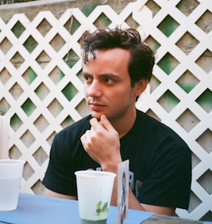

<div id="aboutme" class="container-fluid">
    <div class="row">
        <div class="col-md-10 col-md-offset-1">
            <div class="row text-center">
                
                <h1>Adam Gayoso</h1>
                <h4 style="padding-bottom: 0.1em;">PhD Student,</h4>
                <h4 style="padding-bottom: 0.1em;">Computational Biology,</h4>
                <h4 style="padding-bottom: 0.3em;"><a href="http://ccb.berkeley.edu">UC Berkeley</a>*</h4>
                <h4 style="padding-bottom: 0.4em;">adamgayoso@berkeley.edu</h4>
                <a href="https://github.com/{{ site.github_username }}" class="icon">
                  <i class="fa fa-github fa-lg"></i>
                </a>
                <a href="https://linkedin.com/in/{{ site.linkedin_username }}"" class="icon">
                  <i class="fa fa-linkedin fa-lg"></i>
                </a>
            </div>
            <hr>
            <div class="row">
                <p>
                    I am a junior computational biologist in the <a href="https://www.mskcc.org/research-areas/labs/dana-pe-er">Pe'er Lab</a> at Memorial Sloan Kettering Cancer Center, where I develop methods to resolve technical errors in single-cell RNA-sequencing data. Previously, I was a student at Columbia University, where I received my MS in Computer Science and BS in Operations Research: Engineering Management Systems.
                </p>
                <p> *Starting Fall 2018 </p>
            </div>
        </div>
    </div>
</div>